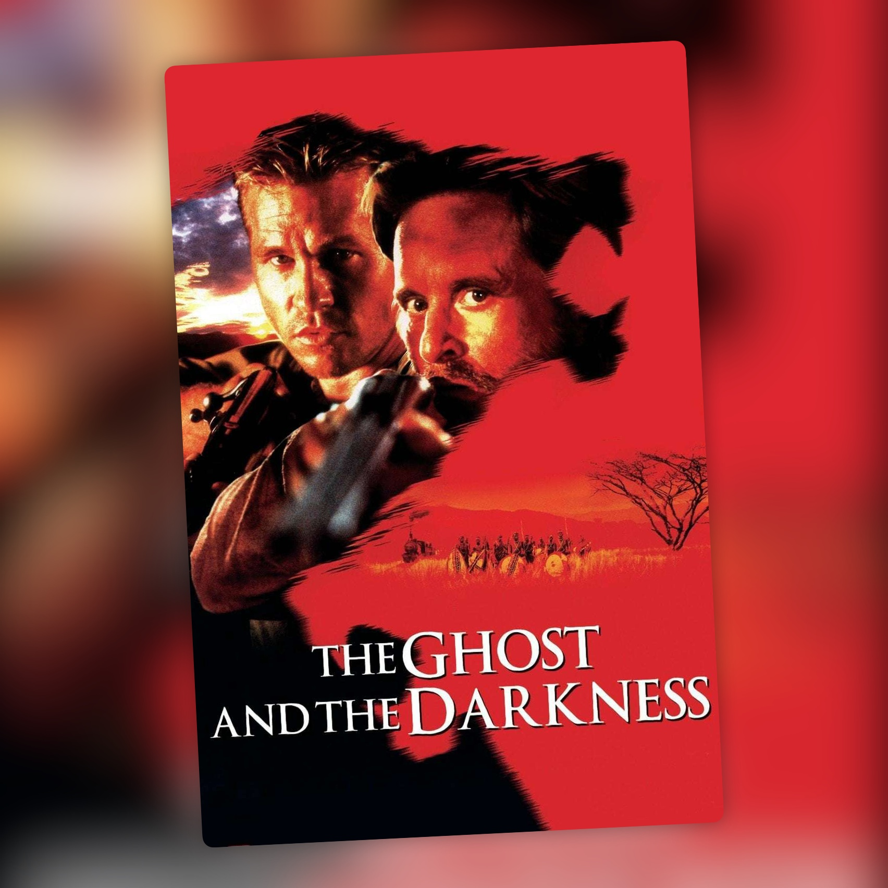

Los demonios de la noche (1996)
Una vieja película de aventuras que sigue funcionando

Hacía muchísimo que no veía Los demonios de la noche, casi desde el estreno, y me ha gustado reencontrarme con ella. Me ha parecido una muy buena película de hombres contra bestias.
Tiene además una parte personal. Val Kilmer me encantaba y cualquier película que protagonizara la iba a ver al cine, así que esta me trae recuerdos de aquella época.
La premisa es sencilla. A finales del siglo XIX, el ingeniero John Patterson (Kilmer) llega a África para construir un puente. Entre los trabajadores ya tiene fama de héroe por haber cazado un león de un solo disparo, pero la cosa se complica cuando aparecen dos leones que empiezan a matar a la gente del campamento. Para pararlos recurre a Remington (Michael Douglas), un cazador con mucha experiencia. Está basada en hechos reales.
La dirige Stephen Hopkins, que antes había hecho Pesadilla en Elm Street 5: El niño de los sueños y que después hizo Perdidos en el espacio.
Lo que mejor me ha parecido es la tensión, que está muy lograda. Me encanta el escenario, un campamento perdido en mitad de África donde cualquier noche puede ser la última. La película juega bastante con lo que no ves: muchas veces basta con saber que los leones están ahí, escondidos entre la hierba o alrededor del campamento, para que una escena tenga tensión. Entre los ataques y las trampas que les montan, nunca terminas de saber dónde van a aparecer.
Me gusta mucho cómo tratan a los dos leones. Los llaman el Fantasma y la Oscuridad, y acaban siendo casi figuras místicas, más cerca de una leyenda que de un animal cualquiera. Como son tan difíciles de atrapar, esa sensación va creciendo.
La película se transforma con la llegada de Remington. Hasta ese momento Patterson intenta resolver el problema por su cuenta, y con el cazador parece que por fin hay una solución. Pero los leones tampoco se lo ponen fácil, y los dos hombres, bastante distintos entre sí, acaban obligados a enfrentarse juntos a algo que se les escapa una y otra vez. De ahí sale una amistad que se va formando poco a poco entre los dos y, a partir de ese momento, la película tiene otro tono.
En el reparto, John Kani hace de Samuel. Años después sería T'Chaka, el padre de T'Challa, en Black Panther.
Igual el ritmo es algo irregular, pero cuando la película se mete de lleno en la caza de los leones y en la tensión del campamento sigue funcionando muy bien.
Me alegro mucho de haberla recuperado.
Ficha técnica
- Título original: The Ghost and the Darkness
- Dirección: Stephen Hopkins
- Guion: William Goldman
- Reparto principal: Val Kilmer, Michael Douglas, Tom Wilkinson, John Kani, Emily Mortimer, Bernard Hill
- Año: 1996
- Duración: 109 min
- Plataforma(s) actual(es) en España: no disponible en streaming